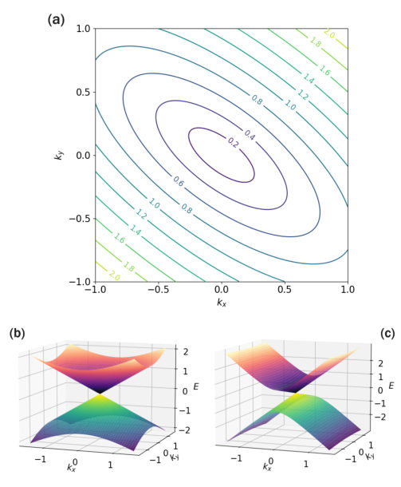
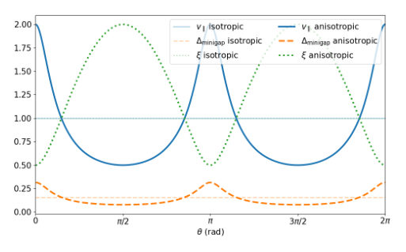
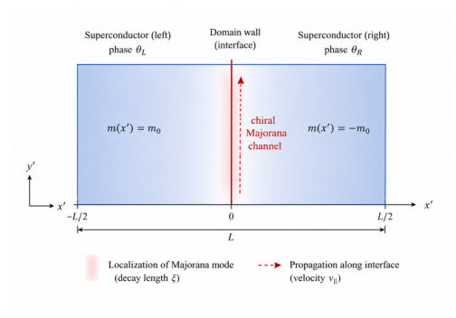
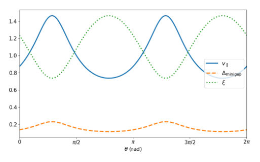

Authors: Titiksha Srivastava, Victor Leroy, Nessrine Benaziz, Nathaniel Findling, Ludovic Largeau, Jamal Ben Youssef, Jean-Paul Adam, Thibaut Devolder, Joo-Von Kim
Type: both · Category: other · PDF: https://arxiv.org/pdf/2607.19993v1
Analysis basis: full PDF text, analyzed in chunks
Topic relevance: spintronics-quantum-optics interface 3/5 · driven-dissipative phase transition 1/5 · exotic spin models in light-matter 1/5 · non-equilibrium dynamics 1/5
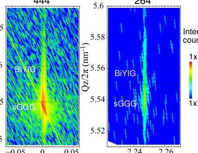
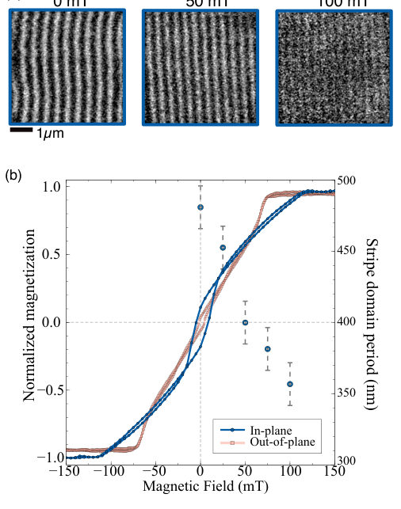
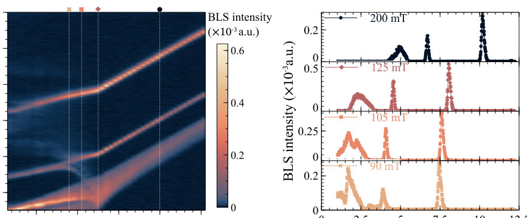
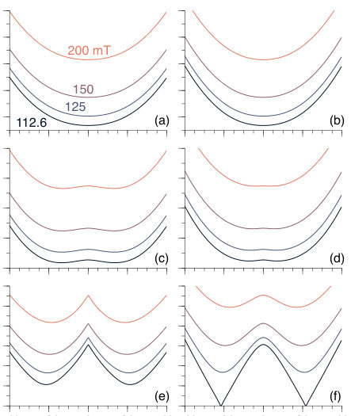
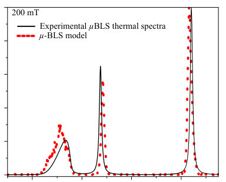
Summary. This paper characterizes the spin-wave dynamics across the uniform-to-stripe domain transition in $ ext{BiYIG}$ films using combined MFM and $\mu$-BLS measurements. By correlating observed low-frequency mode softening with theoretical predictions, the authors establish a robust model for understanding reconfigurable magnonic band structures in these garnet materials.
Why it may be interesting. The work provides a detailed experimental and computational roadmap for mapping out magnon band structures in patterned magnetic materials, which is highly relevant for understanding emergent collective excitations in condensed matter systems.
Main problem. The study investigates spin-wave spectra across the magnetic phase transition from a uniform ferromagnetic state to a stripe-domain structure in an iron garnet film.
Main result. The research successfully correlated the theoretical prediction of finite-$k$ spin-wave softening with the experimentally observed domain periodicity at the transition point, confirming BiYIG as a model platform for studying magnonic band structures.
Method. A combination of experimental techniques—Magnetic Force Microscopy (MFM) and thermal microfocused Brillouin light scattering ($\mu$-BLS)—was used alongside micromagnetic simulations to characterize the magnetic excitations.
Model / system. The physical system is a Bi-doped iron garnet film ($ ext{BiYIG}$) exhibiting perpendicular magnetic anisotropy ($ ext{PMA}$), which forms field-reorientable stripe domains when an in-plane magnetic field is applied.
Key observables. Spin-wave softening frequency, stripe domain periodicity ($P$), and the evolution of multiple spin-wave branches (e.g., PSSW modes) as a function of applied field.
Important parameters / regimes. In-plane magnetic field strength ($H_x$), film thickness ($t=120 ext{ nm}$), and the characteristic wavevector $k$ matching the stripe periodicity.
Assumptions / limitations. The analysis relies on modeling spin dynamics using linearized Landau-Lifshitz equations, and interpreting $\mu$-BLS intensity requires accounting for optical phase accumulation effects.
Figures summary. Figures show MFM images confirming field-dependent stripe domain formation (Fig 2), the evolution of spin-wave spectra via $\mu$-BLS across the transition (Fig 3), and calculated dispersion relations matching experimental softening points (Fig 4, Fig 5).
Paper structure. The paper progresses by first establishing the physical system and methods (MFM/$\mu$-BLS) to observe the domain transition. It then uses theoretical calculations (dispersion relations) and simulations (micromagnetics) to model the observed spin-wave softening, culminating in a comprehensive comparison of theory and experiment.
Spin-wave spectra across transitions between uniform and textured phases can offer deep insight into both symmetry-breaking physics and self-assembled magnonic bands. However, experiments require a material platform that combines low damping, well-defined textures, and spectroscopic access. Here, we study a Bi-doped iron-garnet film with perpendicular magnetic anisotropy (PMA), which undergoes a uniform-to-stripe-domain transition as a function of in-plane magnetic field. Real-space imaging by magnetic force microscopy reveals field-reorientable stripe domains aligned with the in-plane field, while reciprocal-space measurements using thermal microfocused Brillouin light scattering ($μ$-BLS) reveal the softening of a low-frequency spin-wave branch near the transition and the appearance of additional modes in the stripe-domain state. Calculated dispersion relations identify finite-$k$ softening in the Damon-Eshbach geometry ($k \perp M$), with the corresponding wavelength matching the stripe periodicity at the transition. In addition, a $μ$-BLS spectral model reproduces the measured mode frequencies and relative intensities at selected fixed fields. Micromagnetic simulations capture the field-driven formation of the stripe state and reproduce the experimental thermal $μ$-BLS spectra. Our findings establish BiYIG with PMA as a model low-damping platform for studying spin-wave freezing, stripe-domain modes, and reconfigurable magnonic band structures.
Authors: Tenchi Endo, Satoru Hayami
Type: theory · Category: other · PDF: https://arxiv.org/pdf/2607.19823v1
Analysis basis: full PDF text, analyzed in chunks
Topic relevance: spintronics-quantum-optics interface 3/5 · Keldysh / 2PI / non-Gaussian methods 1/5 · non-equilibrium dynamics 1/5
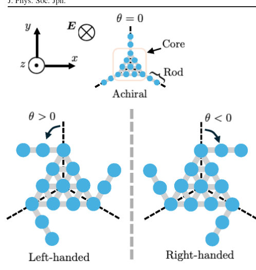
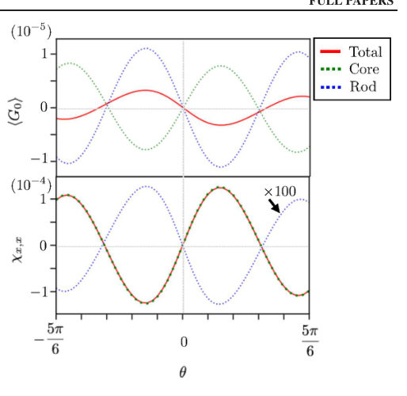
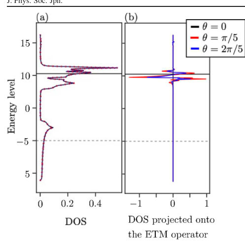
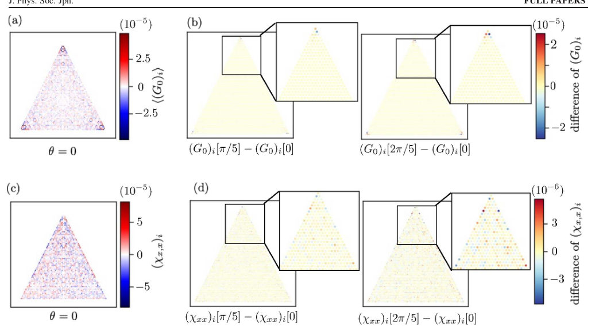
Summary. This paper theoretically models how structural asymmetry in artificial nanostructures can induce electronic chirality. By calculating the Electric Toroidal Monopole and the Edelstein effect, the authors demonstrate that this conversion requires the simultaneous presence of spin-orbit coupling, surface field effects, and geometric structural chirality. The findings clarify a fundamental microscopic link between structure, symmetry, and chiral transport.
Why it may be interesting. This work provides a detailed theoretical framework connecting geometric structure (structural chirality) directly to measurable quantum phenomena (electronic chirality/chiral currents), which is highly relevant for designing next-generation spintronic or topological materials.
Main problem. The study investigates the microscopic mechanism by which structural chirality within an artificial cluster is converted into measurable electronic chirality.
Main result. Both the Electric Toroidal Monopole (ETM) and the Edelstein effect exhibit antisymmetric dependence on structural geometry, confirming that SOC, surface-induced parity mixing, and structural chirality are essential ingredients for this chiral response.
Method. The authors employed theoretical calculations involving linear response theory to evaluate transport properties and used parameter decomposition analysis to isolate the physical origins of the observed effects.
Model / system. The model is a two-dimensional cluster composed of a triangular lattice core connected to three rod-like extensions, subjected to an external surface-induced polar field. The physics is described using an extended Hamiltonian incorporating hopping, SOC, and hybridization terms.
Key observables. Electric Toroidal Monopole (ETM), Edelstein response tensor ($\chi_{a,b}$), electrical conductivity ($\sigma_{a,b}$), and ETM-resolved density of states.
Important parameters / regimes. The structural chirality is controlled by a geometric angle $\theta$. Key physical parameters include SOC strength ($\lambda$), surface potential ($V_{sz}$), and various hopping/splitting energies.
Assumptions / limitations. The analysis utilizes a minimal basis set (s and p orbitals) to model the effects of surface-induced parity mixing, and certain terms are omitted in parameter decomposition for clarity.
Figures summary. Figures illustrate the cluster geometry and $\theta$ dependence of ETM/conductivity contributions (core vs. rod), showing how chirality is encoded in state symmetry rather than total DOS. Real-space plots compare ETM and Edelstein distributions between achiral and chiral configurations.
Paper structure. The paper progresses from defining the physical system and Hamiltonian to calculating key observables (ETM, Edelstein effect). It then uses parameter decomposition analysis to microscopically identify the necessary ingredients—SOC, parity mixing, and structural chirality—that drive both electronic chirality and chiral transport responses.
We investigate how structural chirality is converted into electronic chirality in a two-dimensional cluster model consisting of a triangular-lattice core and three rod-like extensions under a surface-induced polar field. By evaluating the electric toroidal monopole (ETM) and the Edelstein effect, we show that both quantities exhibit antisymmetric and nonmonotonic dependence on the structural parameter controlling the cluster geometry. While the total density of states is almost unaffected by the structural deformation, the ETM-resolved spectrum changes significantly, indicating that chirality is encoded in the symmetry character of the electronic states rather than in the overall electronic spectrum. Real-space analysis reveals that the induced ETM is concentrated near the vertices and rods, whereas the Edelstein response extends more broadly into the core region. Furthermore, a parameter-decomposition analysis identifies spin-orbit coupling, surface-induced parity mixing, and structural chirality as the essential ingredients for both phenomena. Our results clarify the microscopic connection between structural chirality, electronic chirality, and chiral transport responses in artificial surface nanostructures.
Authors: Stefano Paggi, J. Arjan Berger, Pina Romaniello
Type: theory · Category: strongly correlated electrons · PDF: https://arxiv.org/pdf/2607.20070v1
Analysis basis: full PDF text, analyzed in chunks
Topic relevance: Keldysh / 2PI / non-Gaussian methods 3/5 · methods for driven-dissipative 1/5
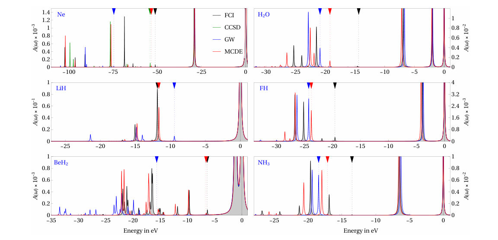
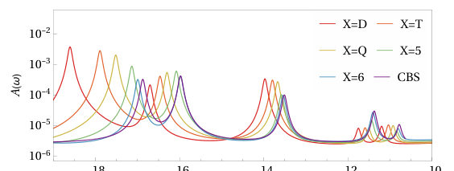
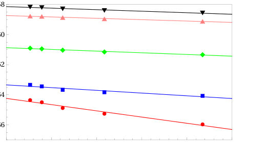
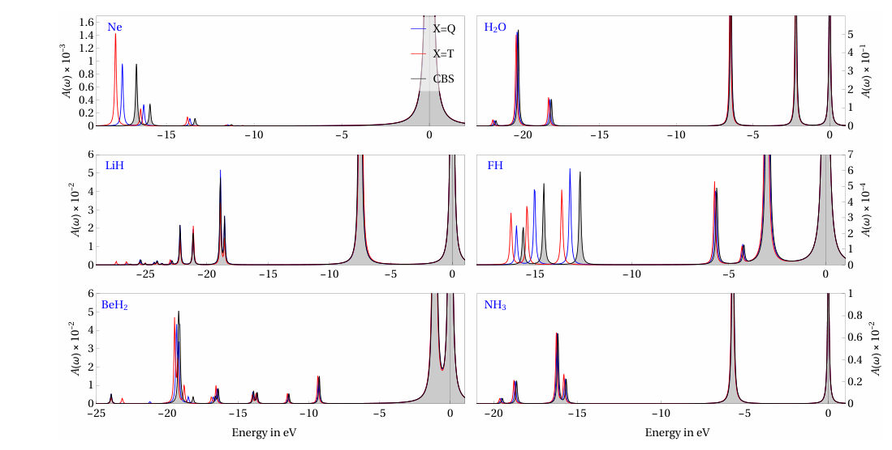
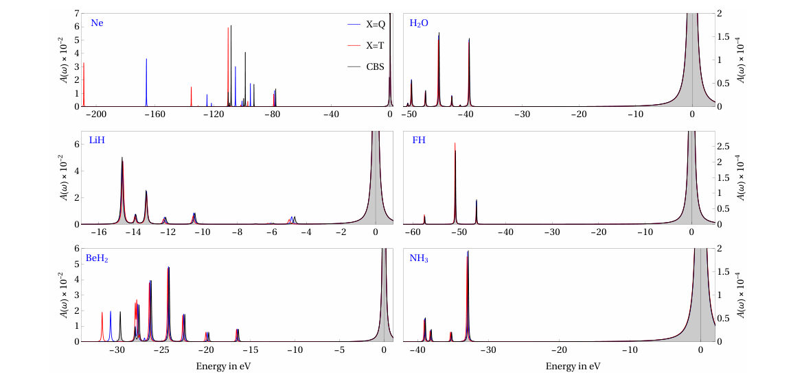
Summary. This paper develops and applies a multichannel Dyson equation formalism to calculate core and valence photoemission spectra for atoms and molecules. It demonstrates that this method significantly improves the description of shake-up satellite features compared to standard GW calculations. The authors also address computational limitations by proposing an extrapolation scheme to estimate results in the complete basis set limit.
Why it may be interesting. This work tackles a fundamental challenge in many-body physics—accurately capturing correlation effects beyond mean-field approximations—which is central to understanding excited states and spectroscopy in condensed matter and molecular systems.
Main problem. The core problem is accurately simulating core and valence photoemission spectra of atoms and molecules by correctly accounting for strong electron correlation effects, especially shake-up satellite features.
Main result. The multichannel Dyson equation (MCDE) significantly outperforms the GW method in describing these crucial satellite features. The authors also propose an extrapolation technique to estimate results in the complete basis set limit.
Method. The study employs a multichannel Dyson Equation approach, which is compared against benchmark calculations from Full Configuration Interaction (FCI) and the GW method.
Model / system. The theory is applied to model photoemission spectra for various atoms and small molecules (e.g., Neon, H2O, NH3). The formalism involves coupling the 1-Green's Function to higher-order correlation channels.
Key observables. Photoemission spectral functions A(omega), quasi-particle energies, and satellite binding energies.
Important parameters / regimes. The convergence of satellite energies with respect to basis set size (requiring extrapolation) is a key parameter/regime discussed.
Assumptions / limitations. Key approximations include the use of the (3,1)-MCDE formalism, which omits full screening effects in $\Sigma_{3p}$, leading to potential overestimation of satellite binding energies.
Figures summary. Figures compare spectral functions for several molecules across different basis sets, demonstrating the convergence behavior and comparing MCDE results against FCI/GW benchmarks.
Paper structure. The paper introduces the (3,1)-MCDE formalism, details its application to calculate spectral functions, compares these results rigorously with established methods like FCI and GW, and concludes by proposing extrapolation techniques for basis set convergence.
We recently presented multichannel Dyson equations for the \textit{ab initio} simulation of various spectroscopies. In particular, we introduced a multichannel Dyson equation for the description of photoemission spectra. In this work, we apply our approach to the simulation of photoemission spectra of atoms and molecules. We introduce a numerically efficient approach to calculate their spectral functions. We compare the spectra obtained within the multichannel Dyson equation to those obtained with full configuration interaction and the $GW$ method. We are thus able to show that the satellite features due to shake-up processes are significantly better described by the multichannel Dyson equation than by $GW$. Finally, we also discuss the slow convergence of the satellite energies with the size of the basis set and we propose a simple extrapolation method to reach the complete basis-set limit.
Authors: Abraham Kaleb Plascencia Pérez Páez, Alireza Qaiumzadeh
Type: theory · Category: other · PDF: https://arxiv.org/pdf/2607.19707v1
Analysis basis: full PDF text, analyzed in chunks
Topic relevance: Keldysh / 2PI / non-Gaussian methods 2/5 · analog quantum simulation 2/5 · driven-dissipative phase transition 2/5 · methods for driven-dissipative 2/5 · Kondo & dissipative impurity 1/5 · correlated cavity matter 1/5 · non-equilibrium dynamics 1/5




Summary. This paper develops an analytical theory to understand how structural anisotropies and band tilting affect Majorana bound states in topological superconductors. By analyzing 2D Dirac and 3D Weyl systems, the authors derive quantitative predictions for key properties like chirality and gap suppression. The results offer crucial design principles for engineering robust Majorana channels.
Why it may be interesting. This work provides concrete analytical tools for engineering topological superconductivity by controlling material parameters like anisotropy and band structure curvature, which is highly relevant for designing quantum hardware based on Majorana physics.
Main problem. The study investigates how anisotropic quasiparticle velocities and tilted band structures modify the microscopic properties of Majorana bound states in topological superconductors.
Main result. The authors derive analytical expressions showing that anisotropy controls Majorana chirality via the velocity-matrix determinant, while tilting suppresses propagation velocity near Lifshitz transitions; furthermore, s-wave pairing projects to an effective chiral p-wave symmetry in 3D Weyl systems.
Method. The work develops an analytical framework using Bogoliubov–de Gennes (BdG) theories for both 2D Dirac and 3D Weyl systems, calculating topological invariants and zero-energy solutions.
Model / system. The models include effective 2D BdG Dirac theories for surface quasiparticles of topological superconductors, and low-energy descriptions of superconducting tilted 3D Weyl nodes. The Hamiltonian incorporates anisotropy via velocity tensors and tilt parameters.
Key observables. Continuum topological invariant, Majorana wave function, localization length, propagation velocity, finite-size minigap, and chirality of the Majorana channel.
Important parameters / regimes. Anisotropy ratios (e.g., $v_{xx}/v_{yy}$), tilt parameter ($t_x$), interface geometry, and proximity pairing strength ($\Delta_0$).
Assumptions / limitations. The analysis relies on effective low-energy descriptions of the quasiparticle spectrum and assumes superconducting pairing is introduced via proximity or intrinsic mechanisms.
Figures summary. Figures illustrate how anisotropy deforms Dirac cone contours into ellipses, show energy dispersions for both isotropic and anisotropic cones, and depict the angular dependence of Majorana properties like velocity and localization length.
Paper structure. The paper proceeds by first analyzing anisotropic 2D Dirac systems to derive general expressions. It then examines the effect of tilt on these 2D systems before extending the analysis to superconducting tilted 3D Weyl systems, concluding with generalized design principles.
Topological superconductors host Majorana boundary modes whose robustness is protected by the nontrivial topology of the bulk Bogoliubov quasiparticle spectrum. While Majorana bound states associated with Dirac and Weyl quasiparticles have been extensively investigated, much less is known about how anisotropic quasiparticle velocities and tilted band structures modify their microscopic properties. Here, we develop an analytical framework for Majorana bound states in effective two-dimensional (2D) Bogoliubov--de Gennes Dirac theories describing the surface quasiparticles of topological superconductors and extend the analysis to three-dimensional (3D) tilted Weyl systems by establishing a microscopic connection to the same low-energy description through superconducting pairing. For anisotropic 2D Dirac systems, we derive closed analytical expressions for the continuum topological invariant, Majorana wave function, localization length, propagation velocity, and finite-size minigap for arbitrary interface orientations. We show that the chirality of the Majorana channel is determined by the sign of the velocity-matrix determinant, while its localization and dispersion are governed jointly by the velocity tensor and the interface geometry. For tilted 2D Dirac cones, we demonstrate that the tilt leaves the spinor eigenstates, Berry phase, and projected pairing symmetry unchanged, but strongly suppresses the Majorana propagation velocity and finite-size minigap as the Lifshitz transition between type-I and type-II regimes is approached. Finally, we consider superconducting tilted 3D Weyl systems and show that the projection of a conventional spin-singlet $s$-wave pairing interaction onto the low-energy Weyl bands naturally generates an effective chiral $p_x\pm ip_y$ pairing symmetry, providing a microscopic Bogoliubov--de Gennes description that supports localized Majorana surface states.
Authors: Paolo Fachin, Francesco Macheda, Paolo Barone, Francesco Mauri
Type: theory · Category: other · PDF: https://arxiv.org/pdf/2607.20117v1
Analysis basis: full PDF text, analyzed in chunks
Topic relevance: non-equilibrium dynamics 2/5 · Keldysh / 2PI / non-Gaussian methods 1/5 · analog quantum simulation 1/5 · correlated / nonlocal dissipation 1/5 · driven-dissipative phase transition 1/5 · methods for driven-dissipative 1/5
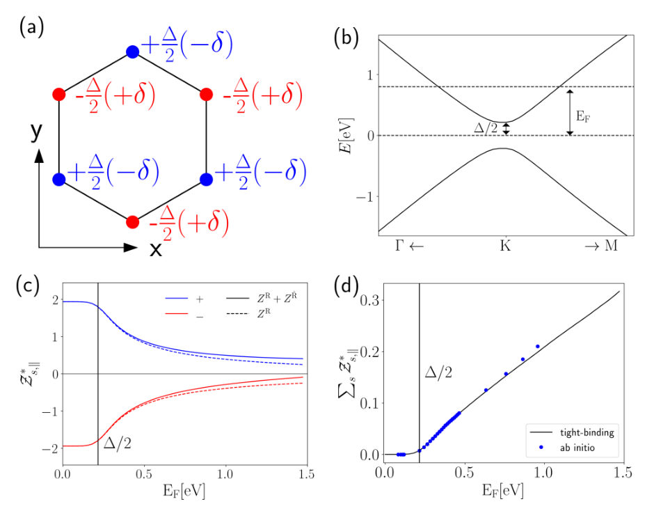
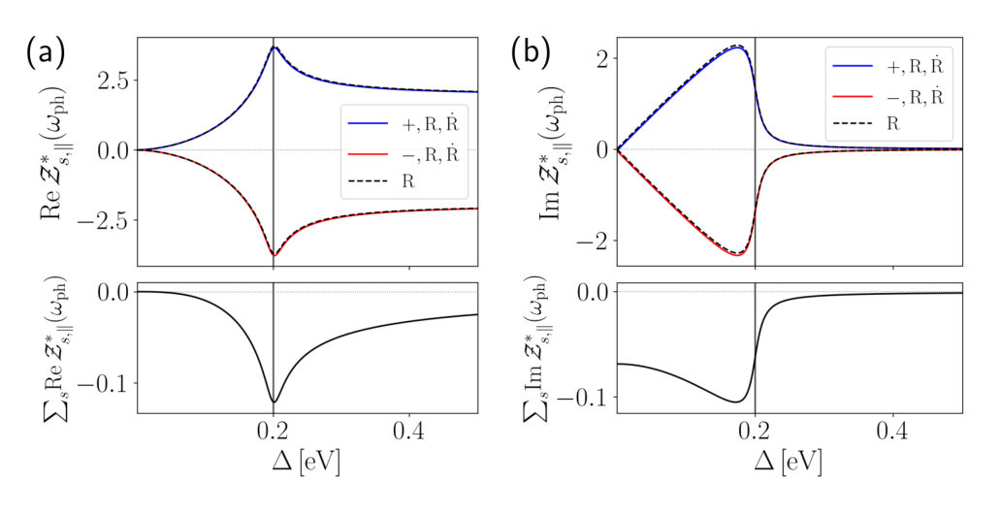
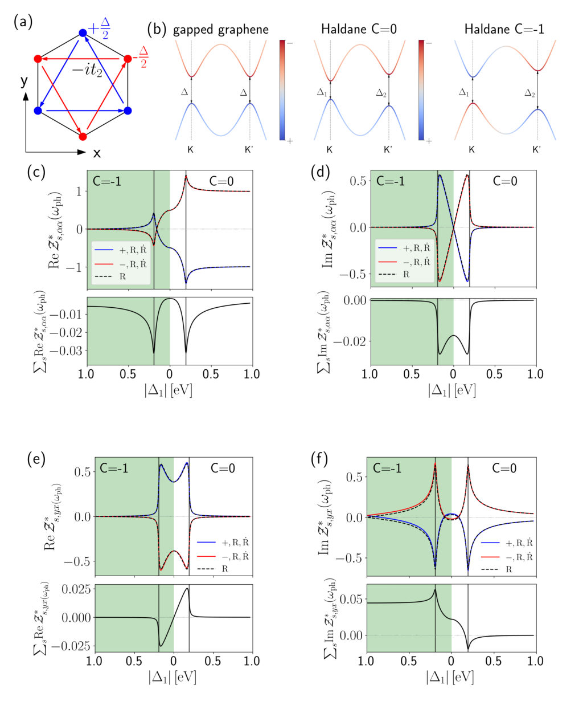
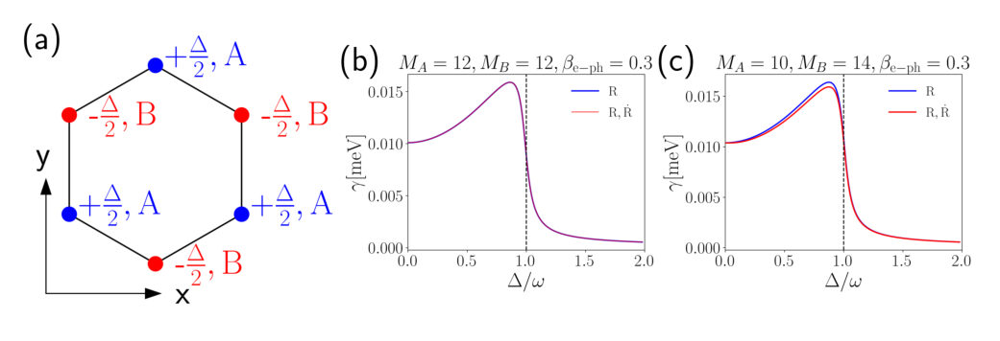
Summary. This paper develops a theoretical framework to calculate vibrational responses in solids by incorporating the effect of nuclear motion on electron orbitals, treating it via an Ehrenfest Lagrangian approach. By including velocity-dependent phases, the authors restore fundamental physical sum rules that are otherwise violated in simpler tight-binding models. This is crucial for accurately predicting phenomena like vibrational circular dichroism.
Why it may be interesting. While focused on solid-state physics (phonons), the rigorous derivation involving time-dependent Hamiltonians and coupling between electronic states and classical nuclear coordinates shares methodological parallels with open quantum systems dynamics where environment coupling is crucial.
Main problem. The work addresses determining frequency-dependent electron-phonon coupling and vibrational responses by accurately accounting for the nuclear velocity dependence of electronic atomic orbitals.
Main result. Including these nuclear velocity corrections restores fundamental all-electron sum rules for vibrational responses, providing crucial quantitative and qualitative improvements over standard tight-binding approximations.
Method. The authors employ an Ehrenfest Lagrangian approach combined with tight-binding methods to derive the equations of motion and calculate vibrational responses within a linear response formalism.
Model / system. The theory is applied using localized atomic orbitals (LCAO) and tested on condensed matter models such as graphene and the topological Haldane model, which are treated via effective Hamiltonians.
Key observables. Born effective charges, force-constant matrix, frequency-dependent vibrational responses, and contributions to vibrational circular dichroism.
Important parameters / regimes. Nuclear velocity ($\dot{\mathbf{R}}_s$) and its higher derivatives (acceleration $\ddot{\mathbf{R}}_s$), which are treated perturbatively up to any order.
Assumptions / limitations. The derivation uses a semiclassical treatment where nuclei are classical, and the method assumes neglecting Stark effect mixing contributions in certain sections.
Paper structure. The paper builds from defining the velocity-dependent basis set using an Ehrenfest Lagrangian approach for LCAO, deriving generalized equations of motion incorporating nuclear velocity/acceleration terms, and finally applying this formalism to calculate vibrational responses and test it on specific models.
The nuclear motion induces in the electronic atomic orbitals a nuclear-velocity-dependent phase (also known as electron-translation factor), which modifies the effective Hamiltonians constructed from localised atomic orbitals. In this work, using an Ehrenfest Lagrangian approach for the localised atomic orbitals (LCAO) and tight-binding methods, we determine, at any order in the nuclear velocity, the equations of motion and the vibrational responses within a linear response formalism, focusing on the tight-binding assessment of the Born effective charges and the force-constant matrix. The appearance of nuclear-velocity-dependent Peierls-like phases in the non-local part of the interactions restores the all-electron sum rules for frequency-dependent vibrational responses. In tight-binding models these corrections crucially modify the vibrational response from a qualitative point of view, also yielding contributions required to capture phenomena such as vibrational circular dichroism. We test these corrections in the tight-binding model for metallic gapped graphene - finding excellent agreement with \textit{ab initio} calculations - and for the topological time-reversal symmetry breaking Haldane model.
Authors: Sandra Sajan, Xinze Yang, Haojie Guo, Tarushi Agarwal, Samuel Mañas-Valero, Carla Boix-Constant, Eugenio Coronado, Fernando de Juan, Eduardo H. da Silva Neto, Ravi P. Singh, Maria N. Gastiasoro, Miguel M. Ugeda
Type: both · Category: other · PDF: https://arxiv.org/pdf/2607.20335v1
Analysis basis: full PDF text, analyzed in chunks
Topic relevance: driven-dissipative phase transition 2/5 · Frenkel-Kontorova 1/5 · Keldysh / 2PI / non-Gaussian methods 1/5
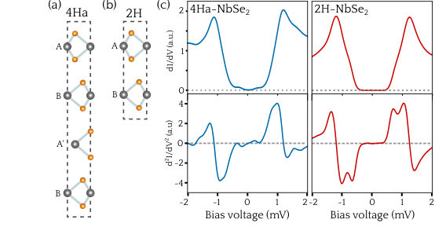
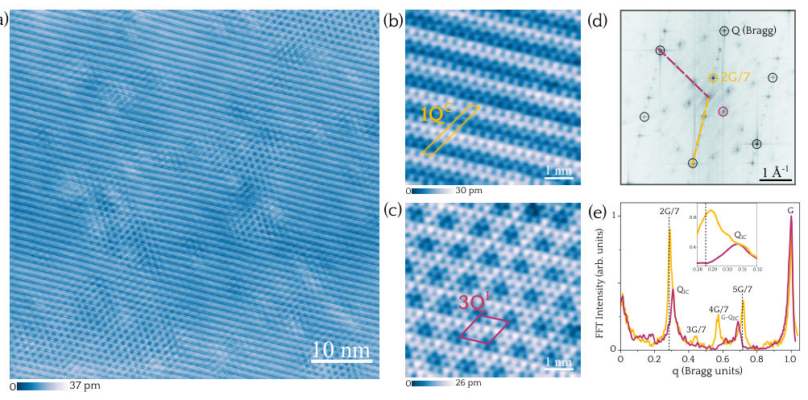
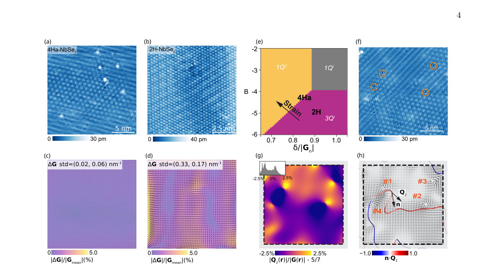
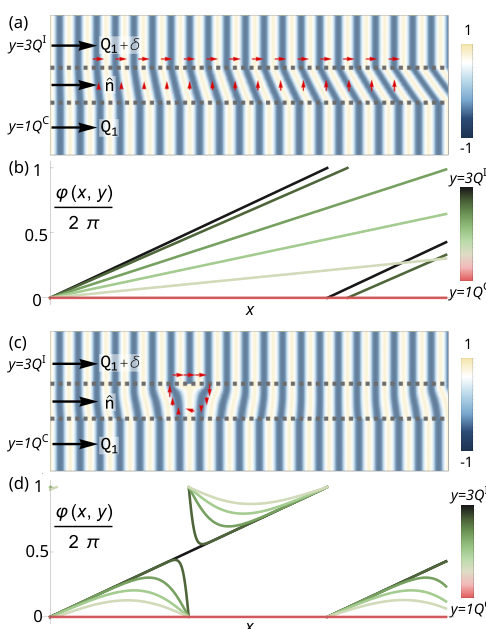
Summary. This work demonstrates that the structural polytype of $ ext{NbSe}_2$ dictates its competing electronic orders, particularly CDW and superconductivity. Using STM/STS and Ginzburg-Landau theory, the authors show that $4 ext{Ha}$-$ ext{NbSe}_2$ uniquely hosts coexisting commensurate and incommensurate CDW states stabilized by phase slips. This highlights stacking sequence as a key knob for controlling quantum electronic phases.
Why it may be interesting. The ability to tune collective quantum order (CDW/SC) simply by changing crystal stacking is a powerful concept for engineering novel electronic phases in 2D materials, relevant to understanding emergent phenomena in strongly correlated systems.
Main problem. The study investigates how changing the layer stacking sequence (polytype) of van der Waals materials like NbSe2 can fundamentally alter competing electronic orders, specifically charge-density waves (CDW) and superconductivity.
Main result. The $4 ext{Ha}$ polytype exhibits an intrinsic coexistence of distinct CDW states ($1Q^\mathrm{C}$ and $3Q^\mathrm{I}$) that is not correlated with local strain, a phenomenon explained by phase slips at domain boundaries. Furthermore, the superconducting gap is selectively suppressed in this polytype compared to its $2 ext{H}$ counterpart.
Method. The research combines high-resolution Scanning Tunneling Microscopy/Spectroscopy (STM/STS) measurements with theoretical modeling using Ginzburg-Landau formalisms to analyze phase transitions and order parameter dynamics.
Model / system. The system is $ ext{NbSe}_2$ in its $4 ext{Ha}$ and $2 ext{H}$ polytypes. The analysis uses a free energy functional derived from Ginzburg-Landau theory to model the complex CDW order parameter, alongside anisotropic two-band McMillan models for superconductivity.
Key observables. CDW phases ($1Q^\mathrm{C}$, $3Q^\mathrm{I}$), superconducting energy gaps ($\Delta_1, \Delta_2$), phase gradients ($ abla\phi$), and the momentum mismatch ($\delta$).
Important parameters / regimes. $T_c$ (6.2 K for $4 ext{Ha}$ vs 7.2 K for $2 ext{H}$), $ ext{B}_{c2} \approx 4 ext{ T}$, and the commensurability energy term ($E$).
Assumptions / limitations. The analysis assumes that phase coexistence boundaries accommodate momentum mismatch via abrupt $2\pi$ phase slips, and superconducting properties can be modeled by anisotropic two-band pairing.
Figures summary. Figures show STM topographies revealing coexisting $1Q^\mathrm{C}$ and $3Q^\mathrm{I}$ CDW phases in $4 ext{Ha}$-$ ext{NbSe}_2$, spectra showing gap suppression with magnetic field, and vector-field plots confirming vortex locations at phase boundaries.
Paper structure. The paper systematically compares the electronic orders of $4 ext{Ha}$ vs $2 ext{H}$ polytypes. It first uses STM/STS to map CDW states, then applies GL theory to model the coexistence mechanism involving phase slips, and finally analyzes superconducting gaps under magnetic fields.
Layer stacking provides a powerful yet underexplored route for reshaping collective quantum order in van der Waals materials. Here we use high-resolution scanning tunneling microscopy and spectroscopy to show that the stacking sequence alone can qualitatively transform the charge density and superconducting orders in NbSe$_2$, while preserving the same in-plane atomic structure. Comparing the 4Ha and 2H polytypes, we find that, unlike the ubiquitous triangular incommensurate $3Q^\mathrm{I}$ order of 2H-NbSe$_2$, 4Ha-NbSe$_2$ hosts two competing CDW states with no measurable correlation with local strain: a unidirectional commensurate $1Q^\mathrm{C}$ phase and a triangular incommensurate $3Q^\mathrm{I}$ phase, with $Q^\mathrm{I}=Q^\mathrm{C}+δ$. We introduce a phase-resolved analysis that directly maps the gradient of the CDW phases and reveals vortices bound to the $1Q^\mathrm{C}$ - $3Q^\mathrm{I}$ phase boundaries. These vortices accommodate the momentum mismatch $δ$ through abrupt $2π$ phase slips, providing a mechanism by which distinct charge orders coexist. Superconductivity is also reshaped by stacking, while both polytypes exhibit multiband pairing.
Authors: Markus J. Buehler
Type: both · Category: disordered systems and neural networks · PDF: https://arxiv.org/pdf/2607.20058v1
Analysis basis: full PDF text, analyzed in chunks
Topic relevance: analog quantum simulation 1/5 · driven-dissipative phase transition 1/5 · methods for driven-dissipative 1/5 · non-equilibrium dynamics 1/5
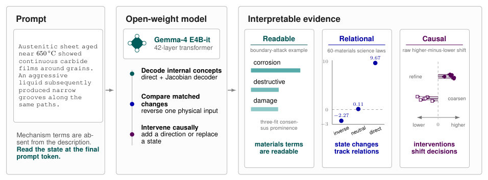
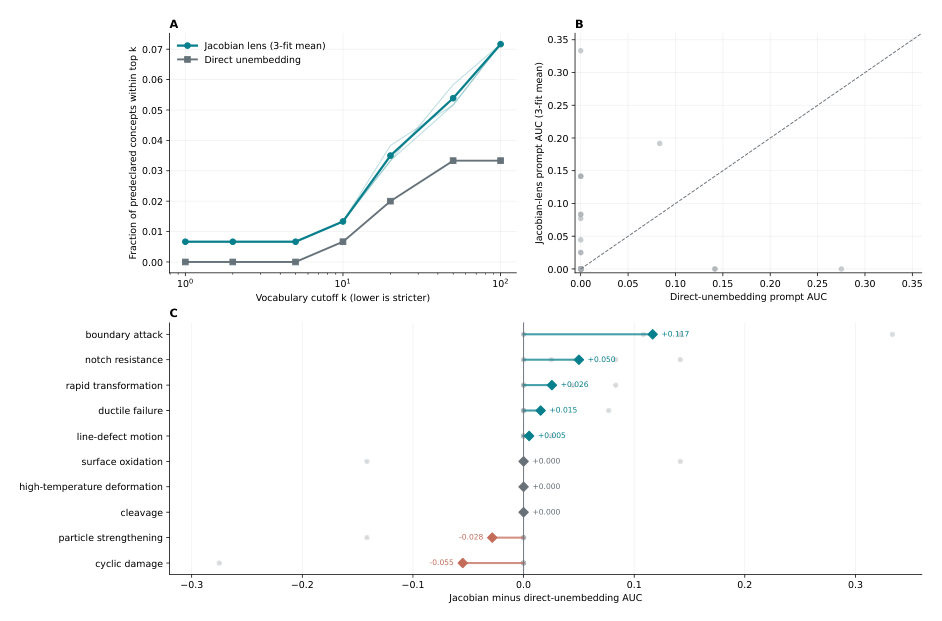
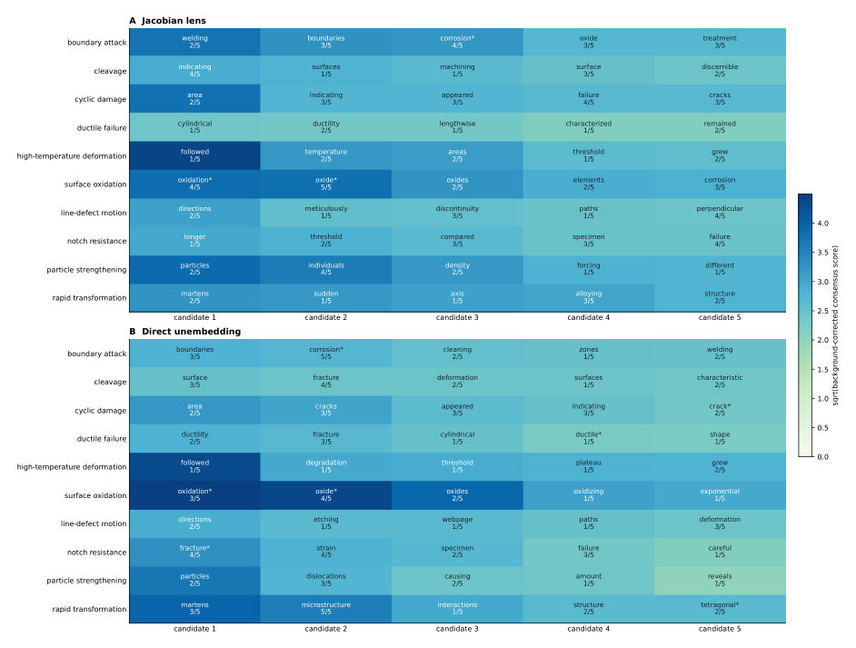
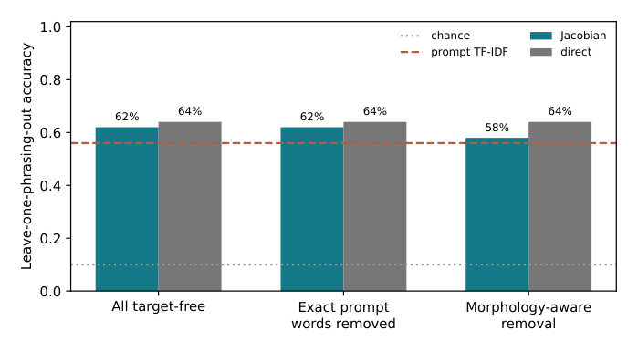
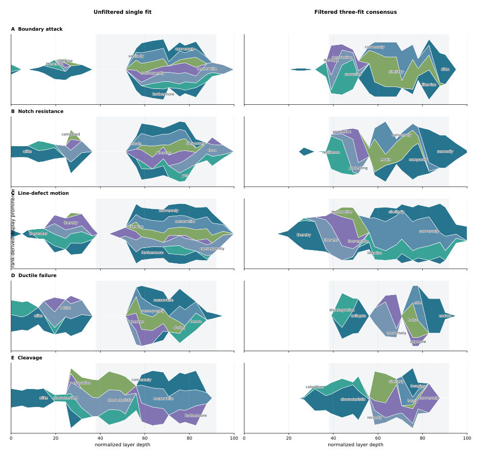
Summary. This paper investigates whether large language models encode actual physics from materials science, moving beyond simple pattern matching. By applying advanced interpretability tools like Jacobian lenses and causal interventions, the authors demonstrate that physical laws are best revealed not by looking at static states, but by observing how the model's internal state changes when a physical input direction is systematically reversed.
Why it may be interesting. While the domain is materials science AI, the methodology—interpreting complex physical laws (constitutive relations) as geometric constraints or directional invariances within a high-dimensional latent space—is highly relevant to understanding how quantum mechanical principles might be encoded in neural network representations.
Main problem. The core problem is determining if a large language model genuinely encodes and utilizes underlying physical laws (mechanisms) from materials science, or if it merely correlates surface-level textual cues.
Main result. Physical relationships are found to be more visible in controlled state changes (e.g., reversing input direction) than in the absolute hidden states alone, suggesting a mechanistic encoding within the model's latent space.
Method. The authors employ advanced interpretability techniques including Jacobian lenses, causal interventions (state patching), and testing directional invariance by reversing physical inputs to probe the model's internal state transformations.
Model / system. The study uses an open-weight language model (google/gemma-4-E4B-it) trained on materials science descriptions. The 'system' being analyzed is the model's high-dimensional hidden state space, which is treated as a representation of physical knowledge.
Key observables. Concept ranks derived from readouts, directional law adherence (e.g., 39/40 correct reversals), and shifts in answer probabilities following causal interventions.
Important parameters / regimes. The analysis focuses on state transformations, the structure of constitutive laws, and the comparison between absolute states versus controlled changes in those states.
Assumptions / limitations. The study assumes that physical mechanisms can be mapped onto mathematically measurable properties within the model's hidden state vectors, requiring careful disentanglement from mere lexical correlation.
Figures summary. Figures summarize evaluations using vocabulary readouts (concepts), matched counterfactual comparisons (state changes/constitutive orientation), and causal intervention tests (answer shifts).
Paper structure. The paper progresses by establishing three separable forms of mechanism information: concepts in states, constitutive orientation via state transformations, and causal control over answers. It uses a multi-stage testing protocol involving readouts, relational geometry checks, and final directional/causal interventions.
Large language models can answer scientific questions, yet a correct output does not reveal whether the model represents or uses the governing physics. Here we show that materials science mechanism information in the open-weight google/gemma-4-E4B-it model has three experimentally separable forms: concepts are readable in individual hidden states, constitutive orientation is carried by controlled transformations between states, and selected internal representations causally control engineering answers. We combine matched direct and Jacobian vocabulary readouts, option-free state geometry, a 60-law counterfactual benchmark and causal interventions. In 50 held-out materials descriptions, three independently fitted Jacobian lenses reproduced concept ranks, and target-free word sets from both readouts enabled blinded identification of 9 of 10 mechanism families. A separate 72-prompt benchmark produced mechanism-specific hidden-state neighborhoods, but an exact graph audit showed that this apparent physical organization was equally explained by numerical comparison. We therefore compared otherwise identical prompts in which only the direction of the physical input was reversed, asking whether the resulting hidden-state movement followed the supplied constitutive law. These state transformations ordered direct, physically neutral and inverse laws across 60 frozen relations and correctly oriented 39 of 40 directional laws, whereas lexical controls were near chance. Bidirectional interventions shifted answer probabilities toward or away from the physically appropriate outcome across all 12 matched cases, while counterfactual state patches transferred opposing decision signals across mechanisms and answer formats. Physical relationships were therefore more visible in controlled state changes than in absolute states alone.
Authors: Meenakshi Sharma, Hrishikesh Borah, Sandeep Singh, Berit H. Goodge, Edouard Lesne, Sandra Nestler, Surinder P. Singh, Haolin Jin, Yejin Lee, Bernd Büchner, Uri Vool
Type: experiment · Category: statistical mechanics · PDF: https://arxiv.org/pdf/2607.20096v1
Analysis basis: full PDF text, analyzed in chunks
Topic relevance: Keldysh / 2PI / non-Gaussian methods 1/5 · QC/QI experiment 1/5 · driven-dissipative phase transition 1/5
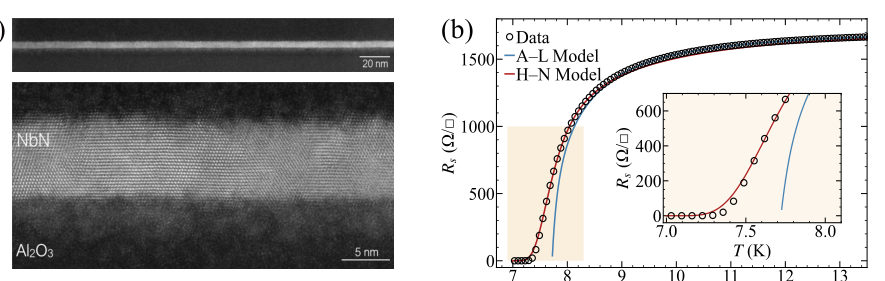
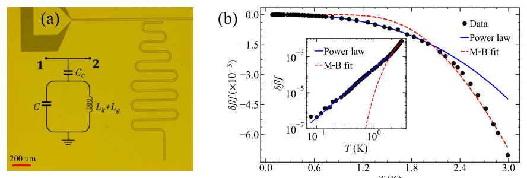
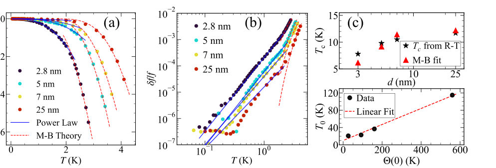
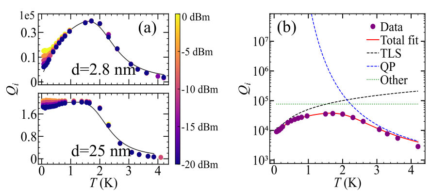
Summary. This research uses microwave resonators on disordered NbN films to probe the electrodynamics of superconductors. By measuring frequency shifts at low temperatures, the authors demonstrate a power-law suppression of superfluid stiffness that deviates from standard theories. This work establishes the ratio of superfluid stiffness to critical temperature as the key parameter controlling the transition between phase-fluctuation and gap-dominated superconducting behavior.
Why it may be interesting. The work provides experimental evidence for phase-fluctuation physics in highly engineered superconducting materials, linking macroscopic circuit properties (high $L_k$) directly to fundamental quantum phase transitions relevant to superconductivity theory.
Main problem. The study investigates the fundamental trade-off between achieving high kinetic inductance, which is useful for quantum circuits, and maintaining phase rigidity in superconducting ultrathin films.
Main result. The low-temperature electrodynamics exhibit a power-law suppression of superfluid stiffness ($\delta f/f \propto T^b$), indicating a crossover governed by the ratio $\Theta(0)/T_c$ between phase-fluctuation and gap-dominated regimes.
Method. Microwave resonators are used to measure the temperature dependence of the fractional resonance frequency shift ($\delta f/f$) across varying film thicknesses.
Model / system. The system is NbN superconducting ultrathin films (2.8 nm to 25 nm) exhibiting nanocrystalline twin-domain disorder. The analysis compares measurements against theoretical models like Mattis-Bardeen theory and Berezinskii-Kosterlitz-Thouless physics.
Key observables. Fractional frequency shift ($\delta f/f$), superfluid stiffness ($\Theta(0)$), kinetic inductance fraction ($\alpha$), and the temperature exponent ($b$).
Important parameters / regimes. The ratio $\Theta(0)/T_c$ is identified as the key parameter governing the crossover between electrodynamic regimes.
Assumptions / limitations. The analysis assumes that the measured frequency shift is dominated by changes in superfluid stiffness, allowing for a clear separation of phase-fluctuation effects from quasiparticle losses.
Figures summary. Figures show STEM images revealing twin domains; plots display $\delta f/f$ vs. $T$, clearly showing a low-temperature power-law deviation from the expected Mattis-Bardeen fit, which is analyzed across multiple thicknesses.
Paper structure. The paper progresses by characterizing the physical platform (disordered films), measuring the frequency shift ($\delta f/f$) as a function of temperature and thickness, fitting the data to identify crossover regimes (power law vs. exponential decay), and finally establishing $\Theta(0)/T_c$ as the universal control parameter.
Disorder is a powerful route to high kinetic inductance in superconducting ultrathin films, enabling compact high-impedance quantum circuits. This functionality, however, comes at the cost of reduced phase rigidity and potentially anomalous electrodynamics. Here, we use NbN microwave resonators with thicknesses down to 2.8 nm and sheet kinetic inductance up to 300 pH per square to probe how this trade-off reshapes the superconducting response. In the thinnest films, transport shows signatures of a Berezinskii-Kosterlitz-Thouless transition, while the microwave response reveals a pronounced low-temperature power-law suppression of the superfluid stiffness, inconsistent with Mattis-Bardeen theory. With increasing thickness, this anomalous regime is progressively suppressed, marking a continuous crossover toward conventional, gap-dominated electrodynamics. Cross-sectional transmission electron microscopy reveals a nanocrystalline twin-domain structure, pointing to oriented microstructural disorder as a crucial factor in the observed response. Overall, the crossover is governed by the ratio of superfluid stiffness to pairing energy, Theta(0)/Tc, identifying this ratio as a parameter governing the boundary between phase-fluctuation-dominated and gap-dominated superconducting electrodynamics in disordered nanofilms.
Authors: Yi Jiang, Haoyu Hu, Dumitru Călugăru, Kaja H. Hiorth, Junze Deng, Hanqi Pi, Handong Chen, Maia G. Vergniory, Ion Errea, Emilia Morosan, Leslie M. Schoop, Claudia Felser, Miguel A. L. Marques, Päivi Törmä, Daniel Agterberg, B. Andrei Bernevig
Type: theory · Category: strongly correlated electrons · PDF: https://arxiv.org/pdf/2607.19458v1
Analysis basis: full PDF text, analyzed in chunks
Topic relevance: Keldysh / 2PI / non-Gaussian methods 1/5
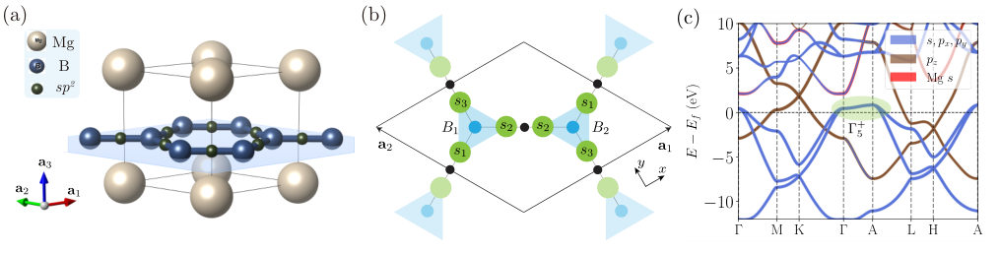
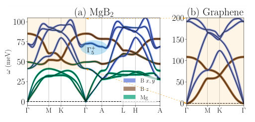
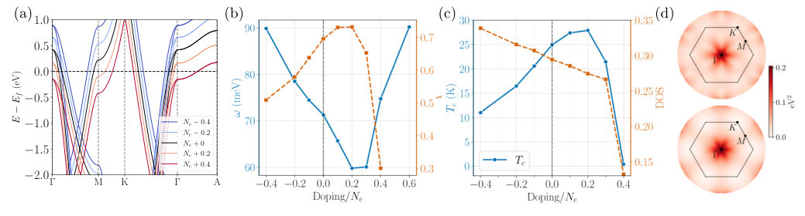
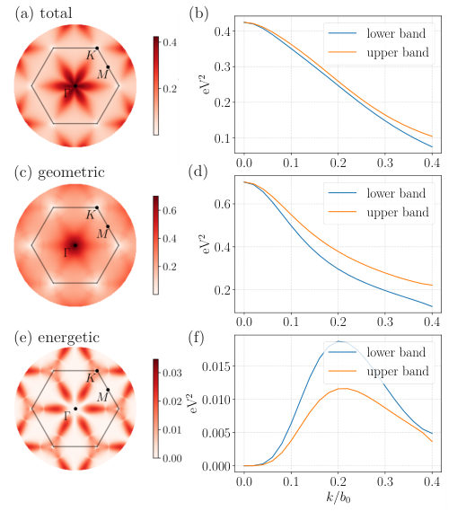
Summary. This theoretical work provides a detailed, symmetry-based account of superconductivity in $ ext{MgB}_2$. It demonstrates that the enhancement of $T_c$ upon doping is fundamentally governed by quantum geometric effects within the electron-phonon coupling. The methodology employs advanced many-body perturbation theory to derive an effective attractive interaction Hamiltonian.
Why it may be interesting. The explicit derivation of an effective electron-electron interaction ($\hat{H}_{ee}$) by integrating out phonons is a canonical technique in strongly correlated physics, providing deep insight into how lattice vibrations mediate pairing interactions beyond simple BCS models.
Main problem. To develop a comprehensive, symmetry-based theory explaining the enhancement of the critical temperature ($T_c$) in $ ext{MgB}_2$ superconductivity by identifying the role of quantum geometry.
Main result. The $T_c$ enhancement is overwhelmingly driven by the geometric component of the electron-phonon coupling (EPC), which arises from the small, quasi-2D $\sigma$ Fermi surface peaked at the Brillouin zone center ($\Gamma$).
Method. The authors combine constructing compact analytic models for electronic structure and phonons with advanced theoretical techniques like degenerate perturbation theory and the Schrieffer-Wolff transformation to derive an effective electron-electron interaction.
Model / system. The system is $ ext{MgB}_2$, modeled using a minimal tight-binding approach focusing on the $sp^2$ boron orbitals, which form an obstructed kagome lattice structure for the $\sigma$ bands. The theory analyzes the coupling between electrons and phonons.
Key observables. Critical temperature ($T_c$), Electron-Phonon Coupling (EPC) strength ($\lambda$), phonon softening modes (specifically the $\Gamma$-point B–B bond-stretching mode), and the ratio of geometric to total EPC ($\lambda_{ ext{geo}}/\lambda$).
Important parameters / regimes. Light electron doping regime, quasi-2D $\sigma$ Fermi surface geometry, and the coupling strength relative to phonon frequencies.
Assumptions / limitations. The analysis relies on symmetry selection rules, the Gaussian approximation for the EPC tensor, and perturbation theory expansions (including the Schrieffer-Wolff transformation).
Figures summary. Figures illustrate band structures showing quasi-2D $\sigma$ bands, phonon spectra highlighting mode softening along $\Gamma- ext{A}$, and doping dependence plots showing $T_c$ non-monotonicity linked to EPC strength.
Paper structure. The paper progresses from establishing the physical model ($ ext{MgB}_2$ structure/bands) to identifying the dominant coupling mechanism (symmetry selection rules leading to $\Gamma_{+5}$ phonon), quantifying the enhancement via doping dependence, and finally deriving the underlying theoretical framework using advanced many-body perturbation theory.
MgB$_2$, a phonon-mediated superconductor with record-high critical temperature $T_c\simeq 39$ K, is revisited to obtain a comprehensive theory of electrons, phonons, and their coupling with minimal ab initio input. We construct compact analytic models for the electronic structure, phonons, and electron-phonon coupling (EPC) of MgB$_2$. We show that strong in-plane B $sp^2$ bonding realizes an obstructed band structure whose natural description is a bond-centered kagome lattice, yielding small quasi-2D $σ$-band Fermi-surface cylinders and pronounced quantum-geometric effects. The phonon spectrum is found to closely track that of a graphene-like boron layer, but the heavy intercalated Mg atoms dominate the three acoustic branches and rigidly lift the boron modes into the optical sector, while the in-plane B-B bond-stretching mode exhibits a pronounced softening along $Γ$-A. By symmetry, this $Γ$-point bond-stretching mode is the only $Γ$ phonon that can couple to the $σ$ Fermi surface, explaining its dominant contribution to the EPC. Upon electron doping toward the doubly degenerate band edge of the $σ$ sheets, we find that a reduced density of states competes with enhanced EPC matrix elements. At light electron doping, ab initio calculations show that the EPC enhancement dominates, leading to an increase in $T_c$ (within the clean doping limit without disorder effects). Using the Gaussian approximation for the EPC tensor, we further show that this enhancement is overwhelmingly quantum geometric in origin, arising from a geometric EPC contribution of the small $σ$ Fermi surface peaked at $Γ$. Overall, our results provide a transparent, symmetry-based account of superconductivity in MgB$_2$ and suggest that quantum-geometric effects can be essential for shaping doping trends in phonon-mediated superconductors.
Authors: Chandroth P. Jisha, Stefan Nolte, Alessandro Alberucci
Type: theory · Category: other · PDF: https://arxiv.org/pdf/2607.19980v1
Analysis basis: full PDF text, analyzed in chunks
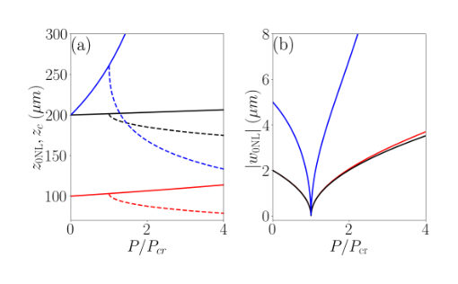
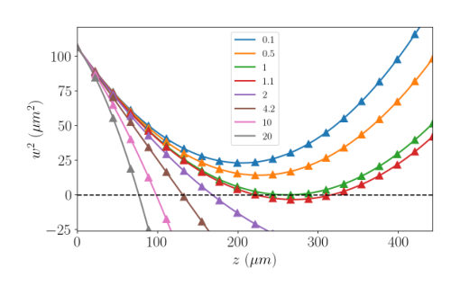
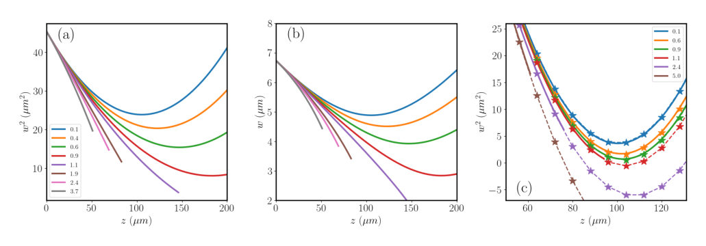
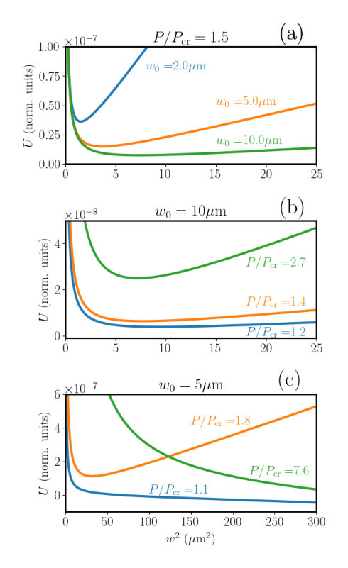
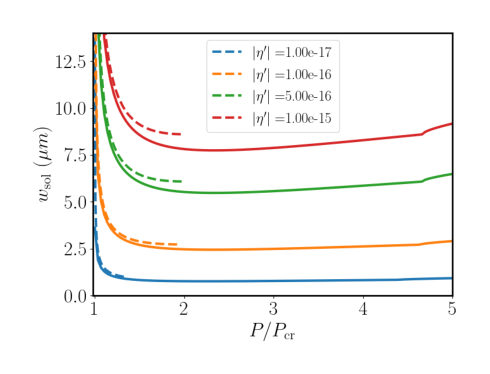
Summary. This paper develops an advanced theoretical method by generalizing the Ehrenfest theorem to analyze nonlinear wave propagation. It models the nonlinearity using a Quantum Harmonic Oscillator potential, leading to solvable ordinary differential equations for the beam width. This framework successfully predicts key phenomena such as self-focusing and stable light localization (breathers) in various optical media.
Why it may be interesting. This work bridges quantum mechanical theorems (Ehrenfest) with classical wave phenomena (nonlinear optics), providing a powerful, simplified analytical tool to predict complex beam dynamics like self-focusing without full numerical simulation.
Main problem. The primary goal is determining the self-focusing and self-trapping behavior of nonlinear optical beams.
Main result. The authors develop a generalized framework using an ODE derived from the Ehrenfest theorem to model beam width evolution, showing it can explain stability and breathing in various nonlinear regimes.
Method. The method involves generalizing the Ehrenfest theorem by modeling the nonlinear potential as a Quantum Harmonic Oscillator (QHO) whose strength depends on power and beam width. This leads to solving high-order ordinary differential equations for the beam width squared ($w^2$).
Model / system. The system is nonlinear wave propagation governed by the Generalized Nonlinear Schrödinger Equation (GNLSE), applied to optical beams in media exhibiting various nonlinear responses (local, nonlocal). The analysis focuses on the evolution of the beam width $w(z)$ along the propagation direction $z$.
Key observables. Beam width ($w$), self-focusing/self-trapping behavior, and the existence of stable solutions like breathers.
Important parameters / regimes. Nonlinearity strength parameters ($\gamma, N, M$), input power relative to critical power ($P/P_{cr}$), and nonlocal length scales ($l$).
Assumptions / limitations. Key assumptions include assuming radial symmetry, approximating the nonlinear potential as parabolic (QHO model), and making approximations like neglecting derivatives of optical power with respect to $z$ (adiabatic drop).
Paper structure. The paper progresses from setting up the GNLSE and generalizing the Ehrenfest theorem, deriving a fourth-order ODE for beam width ($w^2$), simplifying this into various second-order ODEs based on approximations (e.g., adiabatic drop), and finally analyzing specific cases like Kerr or nonlocal nonlinearities.
We discuss how to generalize the Ehrenfest theorem for the computation of the width of nonlinear waves obeying the nonlinear Schrodinger equation. To do that, we model the nonlinear potential as a quantum harmonic oscillator (QHO) whose strength depends on the power and on the wavefunction width. We apply the model to different types of nonlinear responses, eventually comparing the results with numerical simulations. Our model has the advantage of explaining the main properties of nonlinear confined waves, such as stability and breathing, in a relatively simple and intuitive manner.